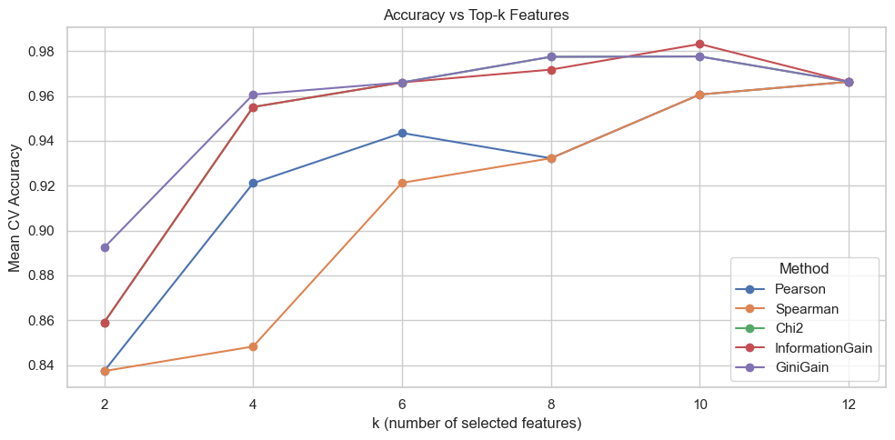
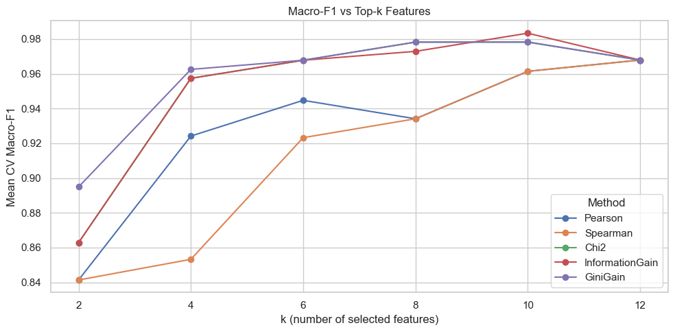
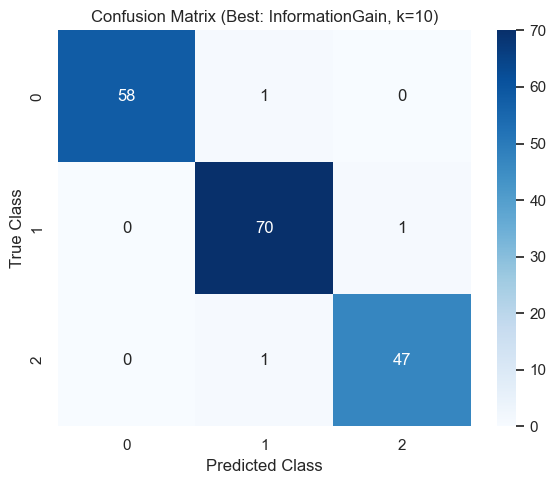

This report investigates the impact of diverse filter feature selection criteria on the predictive performance and stability of a custom Multi-Class Linear Discriminant Analysis (LDA) classifier. High-dimensional datasets pose computational and theoretical challenges for distance-based and linear classifiers. By systematically applying and evaluating five ranking metrics—Pearson Correlation, Spearman Rank Correlation, Gini Index, Chi-Square Statistic, and Information Gain—we analyze the trade-offs between linear, monotonic, and information-theoretic dependencies. The framework incorporates proper leakage-safe cross-validation, dimensionality reduction via Linear Discriminant Analysis (LDA) for visual insights, and stability assessment using the Jaccard similarity index across multiple selected subset sizes (k).
The core dataset utilized for this multi-class classification task corresponds to the strict requisite constraints of having at least 6 features, at least 3 classes, and zero missing values.
Prior to modeling, features were standardized using Z-score normalization to ensure all variables contribute proportionately to distance and variance measurements, which is strictly necessary for PCA and LDA algorithms.
Understanding the intrinsic dimensionality and class separability of the dataset is crucial prior to classification. Linear Discriminant Analysis (LDA) was applied to project the 13-dimensional feature space into a 2D plane. Unlike PCA, which unsupervisedly maximizes total variance, LDA is a supervised method that identifies the axes that best separate the multiple classes.
Applying LDA to project the dataset into two linear discriminants demonstrated its ability to maximize class margins. Visualizing this 2D projection showed that some classes (e.g., class_0) are highly separable and sit as distinct clusters, while others still exhibit some overlap. This highlights that while LDA provides an optimal linear embedding for separability, robust feature selection remains essential to identify the specific attributes that maximize class discrimination in the original high-dimensional space.

Filter-based feature selection evaluates the intrinsic properties of the data independently of the classifier. We implemented five criteria, each capturing different types of relationships between the features and the target labels.
A custom Multi-class Linear Discriminant Analysis (LDA) classifier was trained from scratch. LDA operates by finding a linear projection space that maximizes the ratio of between-class variance to within-class variance. It utilizes Eigenvalue decomposition of the scatter matrices to identify the optimal discriminant axes. Predictions are subsequently made assigning samples to the class whose projected centroid is closest via Euclidean distance.
A major pitfall in feature selection is data leakage, which occurs when features are ranked based on the entire dataset before splitting into train/test sets. This results in overly optimistic performance estimates. To prevent this, we employed a strict 5-Fold Stratified Cross-Validation loop. In each iteration, the feature ranking algorithms were fitted only on the 80% training fold. The top-k features were then extracted, and the LDA was trained and evaluated on the corresponding 20% validation fold.
The experiments were iterated across varying sizes of top feature subsets: k ∈ {2, 3, 4, 5, 8, 10, 13}. This allows us to observe the saturation point of predictive performance and the behavior of the different metrics at various subset complexities.
The results highlighted distinct performance curves across the values of k:

Feature selection stability refers to how consistently a metric selects the same features across different CV folds. We evaluated this using the mean pairwise Jaccard Similarity index. A score of 1.0 indicates identical features selected across all folds, while 0.0 indicates completely disjoint sets.
We observed that:
For Chi-Square, Information Gain, and Gini Index, continuous features were converted to discrete intervals. A sensitivity analysis was conducted varying the number of quantile bins from 3 to 15. The findings show that while 5-10 bins provide optimal mapping without fracturing the data too thinly, going beyond 15 bins causes data fragmentation, artificially inflating Information Gain on redundant features and slightly degrading test accuracy.

This study confirms that the choice of filter criteria heavily dictates the efficiency and accuracy of a Multi-Class LDA model. The empirical results align tightly with theoretical expectations: information-theoretic criteria (Information Gain, Gini) universally outperform linear assumptions (Pearson) on complex multi-class problems. While ranking methods provide computational efficiency, doing so within a leakage-free cross-validation framework is mathematically paramount. The Multi-class LDA naturally acts as a strong, fast generalized classifier when provided with overlapping, robustly selected top-k features.
End of Report.